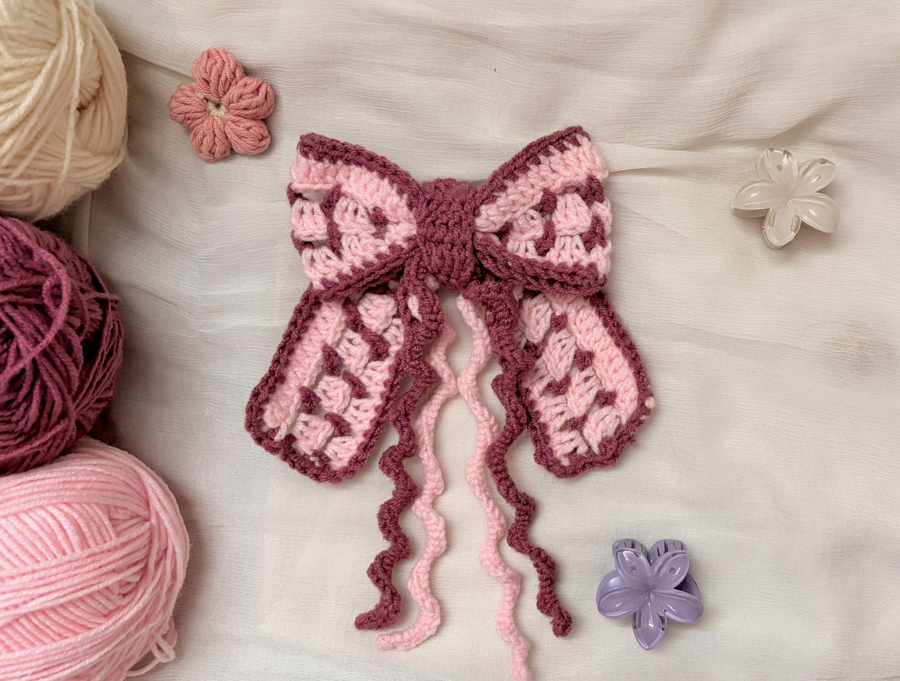
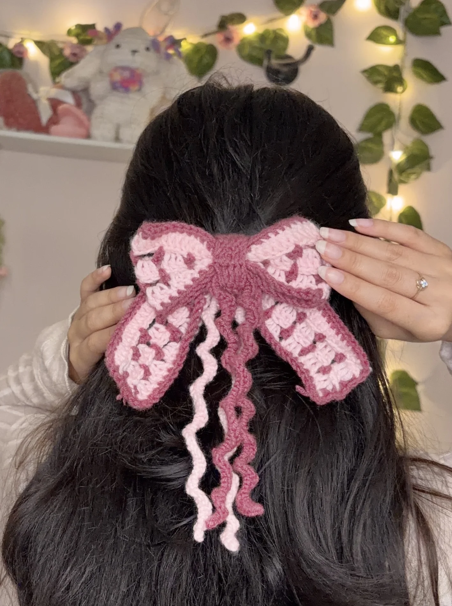

Free Crochet Pattern
How to Crochet a Cute Bow Hair Clip
Today we’re making a cute, Pinterest-inspired crochet bow hair clip! If you love those pretty, coquette-style accessories you see all over Pinterest, you’re going to love this little project. Inspired by the viral Damson Madder bow, this crochet version is a fun way to create your own trendy hair accessory using just a few basic materials.
You can customise your bow with different yarn colours to match your outfits, make it soft and subtle or bold and playful, and even add little embellishments to make it your own. It’s perfect for everyday hairstyles, special occasions, or whenever you want to add a cute, Pinterest-worthy touch to your look.

About the Pattern
This beginner-friendly crochet bow hair clip is inspired by the viral Damson Madder bow you’ve probably seen all over Pinterest. It’s super easy to make and uses basic stitches like chain stitches, double crochet, and single crochet to create the bow, its textured design, and the border. Once the pieces are crocheted, you just need to assemble them and attach the hair clip.
The best part? You can finish this cute little project in just 30 minutes to 1 hour, making it perfect for a quick crochet session or a last-minute handmade accessory. You can also customise it with your favourite yarn colours to match your personal style.
Video Tutorial
Prefer to follow along with a video rather than written instructions? Watch the full video tutorial below, where I take you through each step of making this cute crochet bow hair clip. You’ll see how to crochet the bow, change colours, create the textured pattern, and assemble all the pieces to finish your hair clip. Just follow along at your own pace, and you’ll have your own Pinterest-inspired crochet bow ready in no time!
Tip: I recommend watching the video tutorial for the assembly part, as it’s easier to understand how to fold the bow, secure the centre, and attach the hair clip when you can see each step.
Materials
- Yarn (main color + contrast color)
- Crochet hook (4 mm or suitable size)
- Metal hair clip
- Hot glue
- Yarn needle
Tip: Use two contrasting yarn colours to make the bow’s texture stand out! I’m using grape and light pink, but you can try red and light pink, blue and red, yellow and lilac, or any colour combination you love. Pick colours that look good together and make the pattern easy to see.
Want to shop the materials?
Check out the materials here →Abbreviations
Written Pattern
How to Crochet the Bow Hair Clip
1. Bow Pattern
For this tutorial, I’m using light pink as Colour A and grape as Colour B. You can pick any two colours you love, but I’d recommend choosing contrasting shades so the pretty texture of the bow really stands out!
Foundation: Using Colour A, ch 102.
R1 (Colour A): Skip 2 ch and work 1 dc in each ch across. Finish the last stitch with Colour B.
R2 (Colour B): Ch 3, turn. (Ch 3, skip 3 sts, sc in next st) across. Finish with Colour A.
R3 (Colour A): Ch 3, turn. Work 3 dc in each ch-3 space across. Finish with Colour B.
R4 (Colour B): Repeat R2.
R5 (Colour A): Repeat R3. Fasten off.
Colour Change Tip: To change colours, pull the new colour through the last two loops of your final stitch in the row. If you’re new to changing colours, watch the video tutorial to see how I do it!
2. Border
Colour B: Work sc evenly around the entire rectangle. Fasten off.
I’m adding a border to give the bow a neat, defined finish, but you can totally skip this step if you prefer the look without it!
3. Centre Wrap
Foundation: Ch 7.
R1: Skip 2 ch and work 1 dc in each remaining ch (5 dc).
R2–R7: Ch 2, turn, and work 1 dc in each st across (5 dc). Fasten off.
4. Crochet Spirals
These little crochet spirals add a fun, curly detail to your bow and make it look extra cute!
How to make them:
- Make a slip knot, leaving a long yarn tail. This tail will form the base of your spiral, so decide how long you want it to be.
- Insert your hook around the yarn tail and work single crochet stitches over it, crocheting around the tail as you go.
- Keep working single crochets along the entire length of the tail until you reach the end.
- Once you’re done, you’ll notice that the piece naturally curls into a spiral!
Tip: Don’t worry if the spiral starts curling as you crochet. That’s exactly what you want! A longer yarn tail will give you a longer spiral, so you can adjust the length to suit your bow.
5. Assemble the Bow
- Fold the large rectangle into a bow shape.
- Pinch the centre and secure it with yarn.
- Wrap the small rectangle around the centre and sew in place.
- Add a crochet spiral or other embellishments.
- Attach the metal hair clip.
- Weave in any loose ends.
Your crochet bow hair clip is ready!
A Little Note from Stitchy Days ♡
Hi there!
Thank you so much for trying one of my crochet patterns! I’m so happy to have you here, and I hope you enjoy making this project as much as I enjoyed creating it.
If you make something using this pattern, I’d love to see it! Feel free to tag Stitchy Days when you share your finished project. Seeing your creations means so much to me as I continue growing this little crochet corner.
Thank you for supporting my work and happy crocheting! ♡
